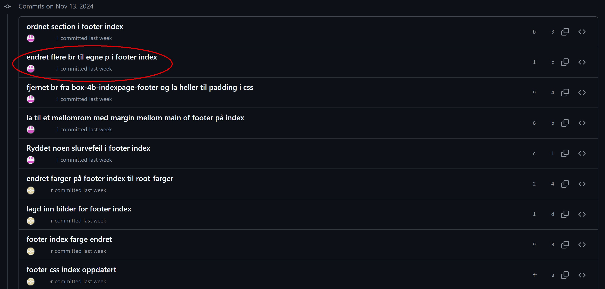
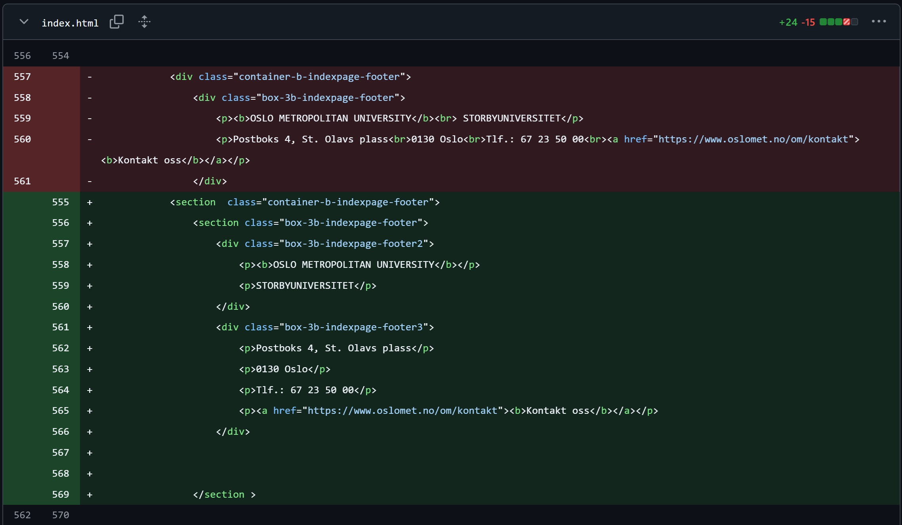
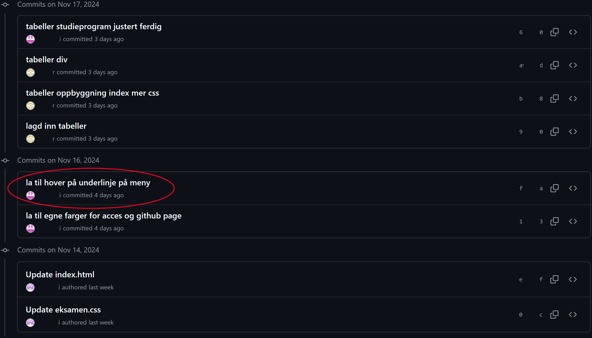
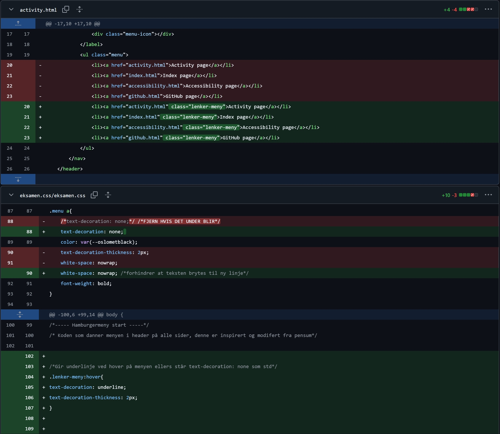

Om å samarbeide gjennom Github
Github er et verktøy som lar utviklere samarbeidet enkelt og effektiv i samme repository, ved at alle brukerene i et prosjekt danner en eller flere grener (branch) fra hovedfilen (main). Grenen vil da være en eksakt kopi fra main fra det tidspunktet den ble laget. I hver gren kan man gjøre spesifikke endringer som man senere overfører (merger) til main.
Gjennom «push» overfører man endringen man har gjort og gjennom «pull» laster man inn de siste endringene i en branch. En utvikler vil «commite» sin endring slik at de resterende i gruppen også kan se på koden og avgjøre om man vil beholde endringen.
Fordeler med å samarbeid gjennom Github
- Enkelt å opprette et felles prosjekt hvor man lett kan legge til nye medlemmer.
- Enkelt å dele kode, hvor alle kan få tilgang til hovedkoden i main og egne brancher.
- Enkelt å samarbeide uten å påvirke hverandres arbeid gjennom grener.
- Enkelt å beholde eller forkaste endringer gjennom push og pull. Dette gjør også at hovedfilen med kode ikke blir påvirket før en eller flere har bestemt seg for hva man gjør med endringen.
- God sporbarhet. Slik at det er enkelt å holde oversikt over hvem som har gjort når og hva.
Eksempler fra samarbeidet i Github
Gjennom commit-historien i github kan man se alle de spesifikke endringene brukerene har gjort (commited), og man kan videre gå inn å se på hver enkelt endring.
Bildene under viser utdrag fra commit-historien i vår Github, samt spesifikke endringer som ble gjort. Brukerenes navn og id er fjernet for å opprettholde anonymitet.
Bildet under viser det første utdraget av commit-historien, hvor man kan se at det er utført små commits gjevnlig med en beskrivende tekst for endringen.
Neste bilde viser den spesifikke endringen som er navngitt "endret flere br til egne p i footer index" i udraget av commit historien over. Rød farge (-) indikerer hvordan koden orginalt så ut, mens grønn farge (+) indikerer koden etter endingen har blitt gjort. Som vist av bilde ser man som beskrevet av "tittelen" på endringen at utvikleren har fjernet br til fordel for egne paragrafer i index page.
Bildet under viser det andre utdraget av commit-historien, hvor man igjen kan se at det er utført små commits gjevnlig med en beskrivende tekst for endringen.
Neste bilde viser den spesifikke endringen som er navngitt "la til hover på underlinje på meny" i udraget av commit historien over. Rød farge (-) indikerer hvordan koden orginalt så ut, mens grønn farge (+) indikerer koden etter endingen har blitt gjort. Som vist av bilde ser man som beskrevet av "tittelen" på endringen at utvikleren har gjort noen endringer i html og css slik at det blir en underlinje når man hovrer over teksten
